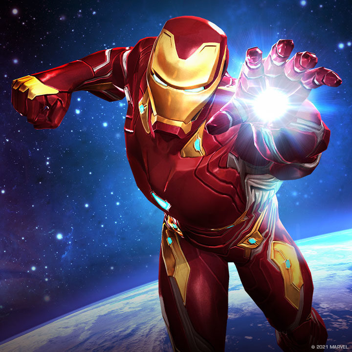
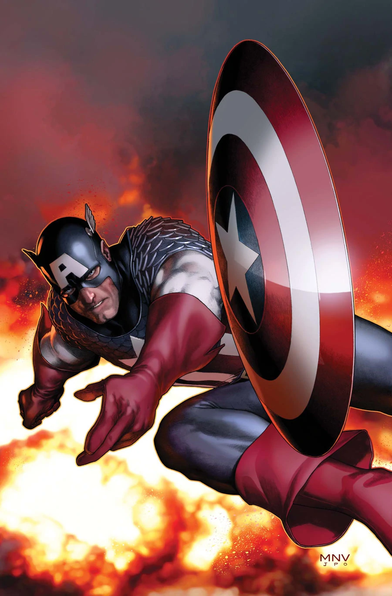

Iron-man
Iron Man Iron Man (conocido en español como el Hombre de Hierro) es un superhéroe que aparece en los cómics estadounidenses publicados por Marvel Comics. El personaje fue creado por el escritor y editor Stan Lee en colaboración con el guionista Larry Lieber. Los artistas Don Heck y Jack Kirby fueron los encargados de su diseño. Este superhéroe hizo su primera aparición en Tales of Suspense #39 (marzo de 1963) y recibió su propio título en Iron Man #1, en mayo de 1968. En 1963, el personaje fundó el equipo de superhéroes Los Vengadores con Thor, Ant-Man, Avispa y Hulk.
Capitan America
El Capitán América, cuyo nombre real es Steven "Steve" Grant Rogers, es un superhéroe ficticio que aparece en los cómics estadounidenses publicados por Marvel Comics. Creado por los historietistas Joe Simon y Jack Kirby, el personaje apareció por primera vez en Captain America Comics #1 (marzo de 1941) de Timely Comics, predecesor de Marvel Comics. El Capitán América fue diseñado como un supersoldado patriota que luchaba frecuentemente contra las potencias del Eje en la Segunda Guerra Mundial, y fue el personaje más popular de Timely Comics durante el período de guerra. La popularidad de los superhéroes se desvaneció después de la guerra, y el cómic del Capitán América dejó de editarse en 1950, con un breve resurgimiento en 1953. Desde que Marvel Comics revivió al personaje en 1964, el Capitán América se ha mantenido en publicación.
Hulk

Hulk (también llamado El Hombre Increíble en algunas de las traducciones al español), es un superhéroe ficticio que aparece en los cómics estadounidenses publicados por Marvel Comics, siendo considerado el personaje más fuerte de la editorial. Fue creado por los escritores Stan Lee y Jack Kirby siendo su primera aparición en The Incredible Hulk #1 publicado en mayo de 1962.